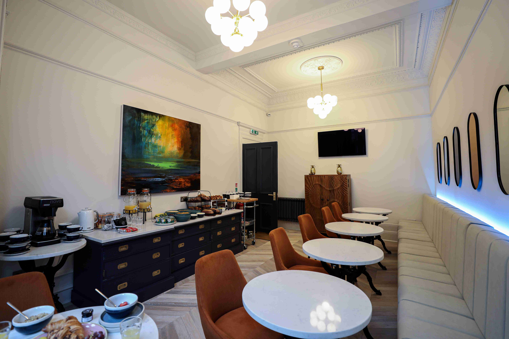
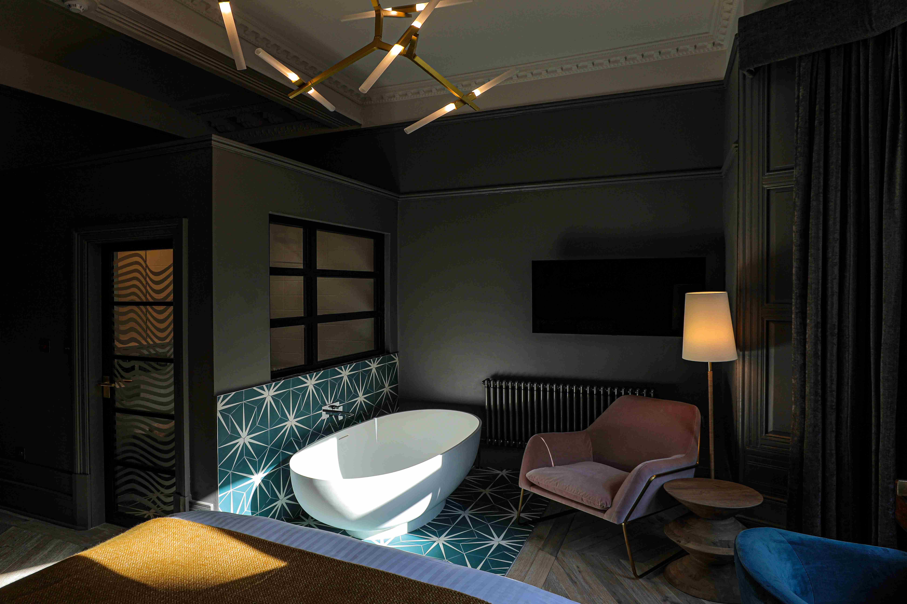

Interior Design, MEP
Space Management Strategy
Project Management
Hotel
890m2
Completed
The Metro Inns Hotel is a large-scale hospitality development currently under construction, conceived through an integrated architectural, structural and MEP approach. Developed in cooperation with Soheil Shirazi, the project is guided by a comprehensive space management strategy that prioritizes operational efficiency, clarity of circulation and long-term adaptability. With a gross area of 109,000 square meters, the design responds to the demands of contemporary hotel infrastructure while maintaining a coherent spatial hierarchy across public, service and private zones. The project reflects a balanced synthesis of technical rigor and strategic planning, establishing a robust framework for future growth and functional flexibility.

